Importación de archivos de ARCA con formato "CSV"
El primer paso del proceso consiste en subir el archivo a importar que tiene que ser de tipo "csv".
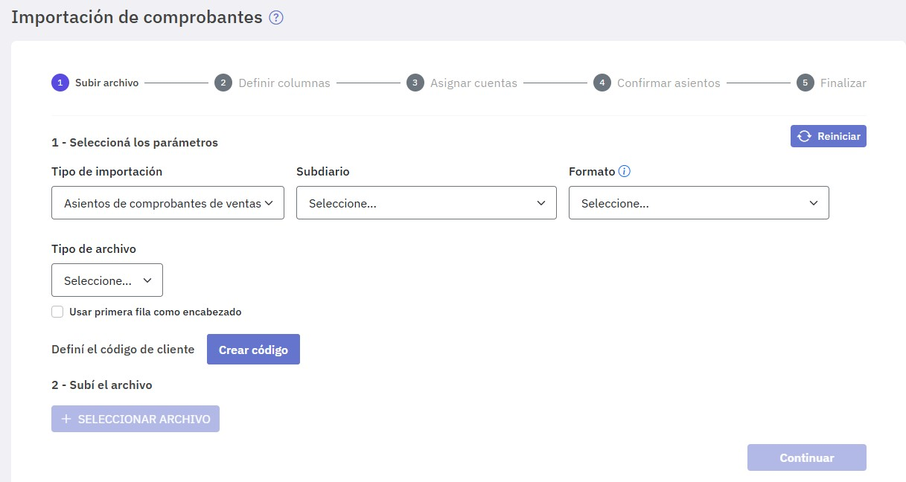
Completá:
Seleccioná los parámetros:
-
Tipo de importación : Asientos de comprobantes de ventas. -
Subdiario -
Formato : seleccioná "Ventas ARCA (Mis comprobantes) CSV". -
Tipo de archivo : Está deshabilitado para este tipo de formato. -
Separador : Está deshabilitado para este tipo de formato. -
Usar primera fila como encabezado : Está deshabilitado para este tipo de formato. -
Definí el código de cliente : Si aun no definiste una máscara para la codificación de clientes/proveedores, tenés que crearla en este paso para poder continuar. El motivo es que al importar comprobantes, los clientes deben registrarse en Easysoft y para ello debe estar definida la máscara. Para crearla presioná "Crear código"; podes consultar los detalles de cómo hacerlo en Código de clientes y proveedores. Si ya habías definido una máscara, no aparecen ni el texto ni el botón “Crear código”.
Ya estás en condiciones de subir el archivo.
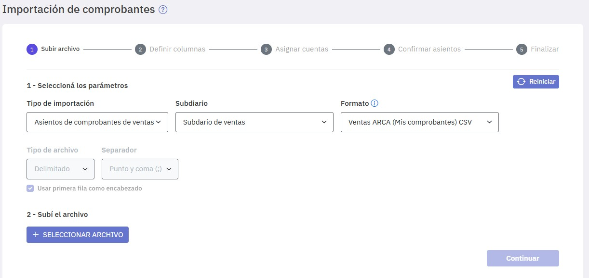
Subí el archivo:
-
Seleccionar archivo : Presioná el botón "Seleccionar archivo" y elegí el archivo de ventas a importar.
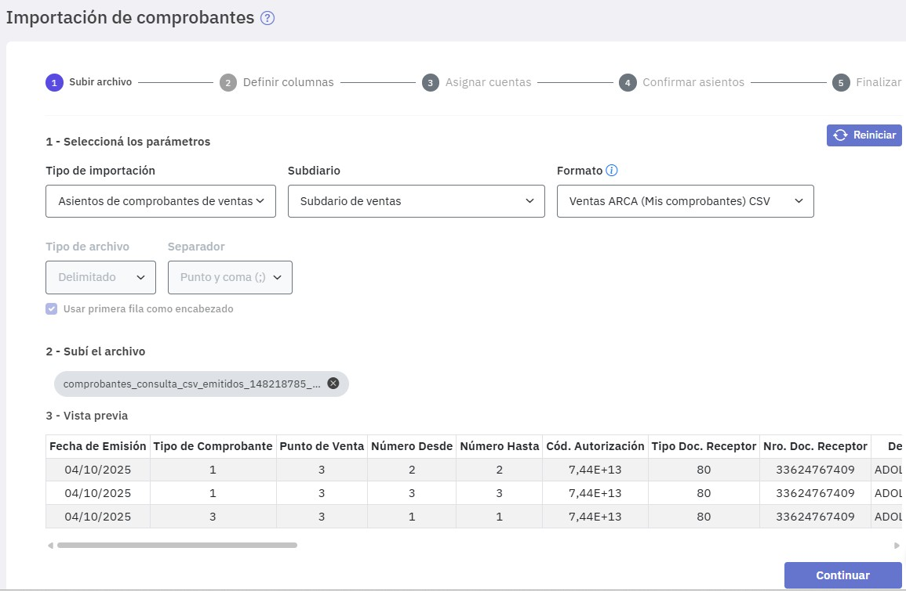
Se realiza un proceso de validación e importación de los comprobantes incluidos en el archivo. Al finalizar el proceso, si no ocurrieron errores, se exhiben al pie de la ventana los comprobantes importados y se habilita el botón "Continuar" accediendo al siguiente paso "Definir columnas", en el que se definen y validan las columnas. Estas están predefinidas con el formato y el tipo de dato que corresponde (texto, decimal, fecha, etc.) y no son editables.
Luego de un proceso de validación de los datos (se observa un tilde verde en la columna "Estado" ubicada a la derecha de cada dato), si no se producen errores, se habilita el botón "Continuar".
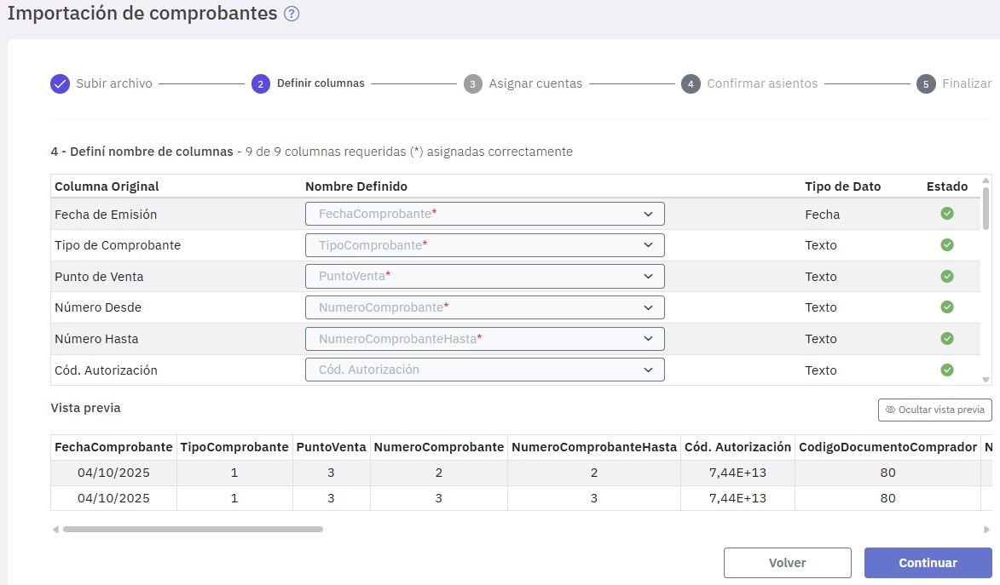
Si querés ocultar el detalle de los comprobantes importados presioná el botón "Ocultar vista previa".
El siguiente paso es "Asignar cuentas".
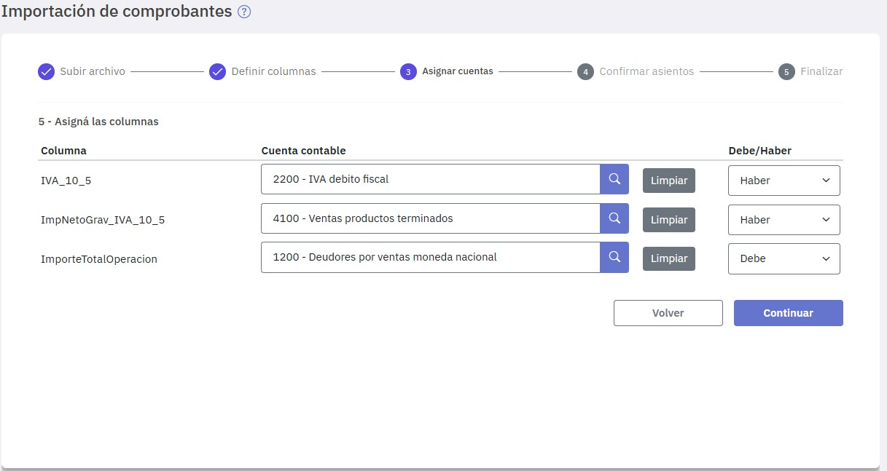
En este paso tenés que indicar las cuentas contables que corresponden a las columnas que el sistema necesita para generar los asientos, se muestran sólo las filas que corresponden a las columnas requeridas.
También tenés que indicar si cada cuenta va al debe o al haber en los asientos que se van a generar. Esto es muy importante ya que depende de esa elección si los asientos van a balancear o no.
En caso de que los asientos no balanceen, se exhibe un aviso detallando el error.
Si las cuentas balancean se habilita el botón "Continuar" accediéndose al paso "Confirmar asientos".
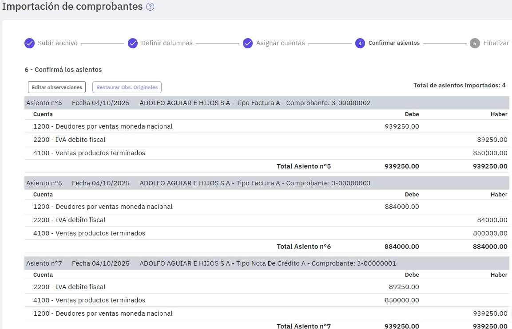
Se muestran los asientos generados correspondientes a los comprobantes importados, pero aún no confirmados.
Los asientos se numeran automáticamente a partir del último número registrado en el subdiario elegido. En caso que al guardar se repita un numero de asiento, se exhibe un error y se sugiere autoasignar el número de asiento.
Si haces clic en "Editar observaciones" podés modificar las observaciones de los asientos. Las modificaciones pueden afectar a todos los asientos o solamente a los que indiques. Una vez modificadas, si querés volver a las observaciones originales presioná "Deshacer", para confirmarlas presioná "Aplicar". Una vez aplicadas, si queres volver a las observaciones originales presioná "Restaurar Obs.Originales".
Ya estás en condiciones de incorporar los asientos al subdiario, para ello presioná "Guardar".
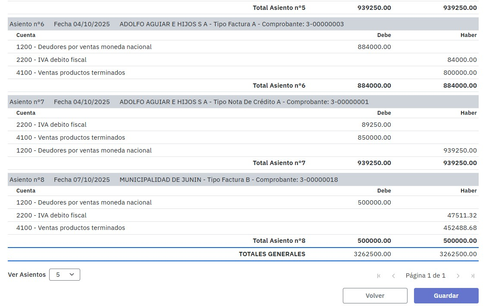
Por último, al presionar "Guardar", se finaliza el proceso.
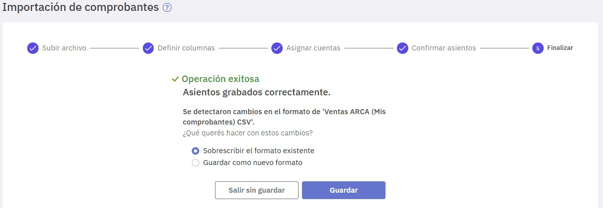
En esta etapa ya se encuentran incorporados los comprobantes y asientos al sistema y se ofrece la posibilidad de guardar los parámetros que seleccionaste en los pasos anteriores para que, en futuras importaciones te faciliten la tarea.
Por último, podés ver los asientos importados o repetir el proceso para importar otro archivo.
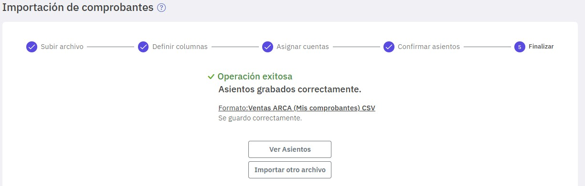
Para tener en cuenta
Al realizar la importación pueden presentarse algunos inconvenientes, en Inconvenientes al importar comprobantes te detallamos algunos de ellos .
Como exportar archivos de ARCA
Ingresar a: https://www.afip.gob.ar/landing/default.asp
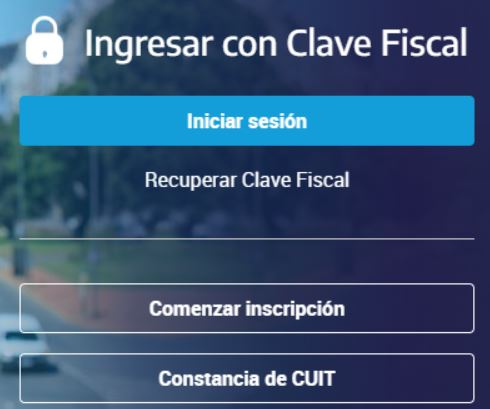
Presioná "Iniciar sesión".
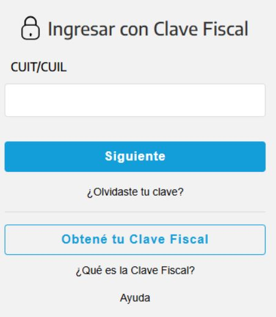
Ingresá tu CUIT y tu clave.
Al acceder al portal de ARCA buscá la aplicación "Mis comprobantes".
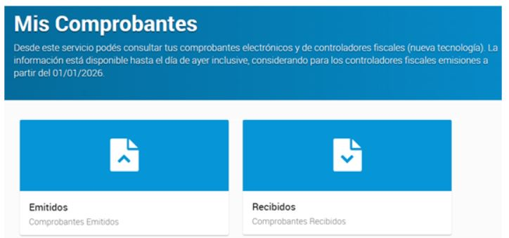
Presioná el botón "Emitidos" y completá los datos. Presioná "Buscar".
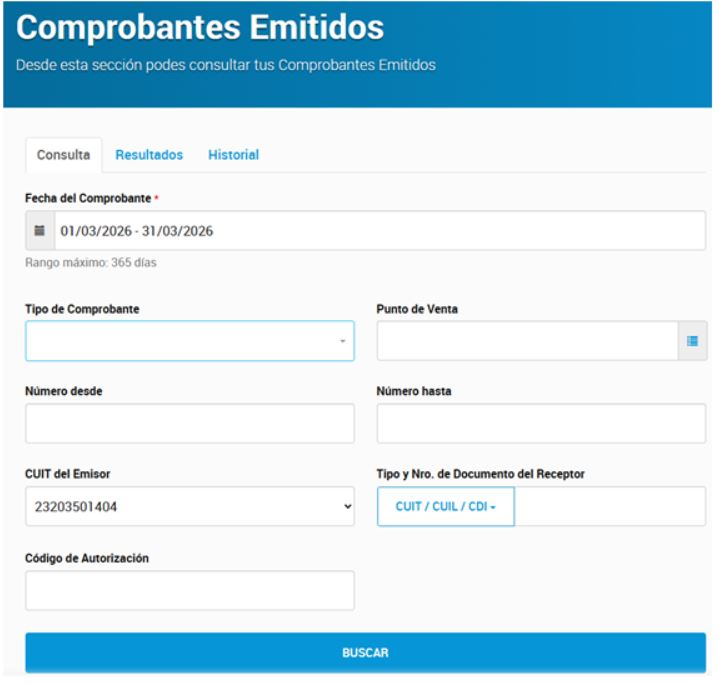
En la presente pantalla presioná "CSV".
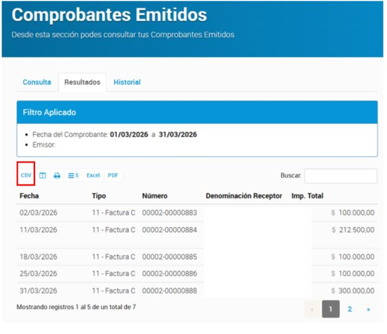
Al presionar "CSV" se descarga el archivo zipeado. Una vez deszipeado queda disponible para su importación.
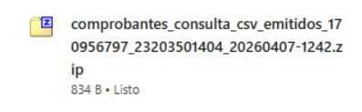